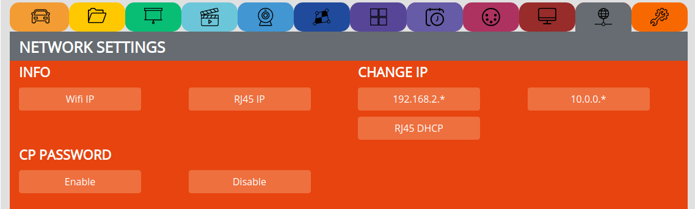
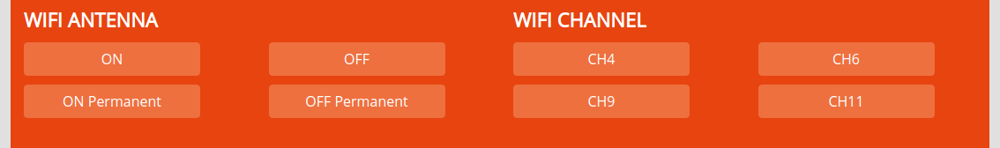

NETWORK SETTINGS¶
INFO¶
CHANGE IP¶
192.168.2. => Set the ip range to 192.168.2.*** (revert from dhcp)
10.0.0.0. => Set the ip range to 10.0.0.0.*** (revert from dhcp)
RJ45 DHCP => Set the rj45 connection to dhcp to get the ip address from a router
Note
The Wifi IP address stays always the same
CP PASSWORD¶
To copy protect your content and lock the remote:
Username: pocketvj
Password: 12345
Note
Change the password in /etc/lighttpd/.htpasswd
WIFI ANTENNA¶
Enable or Disable wifi temprary or permanent
WIFI CHANNEL¶
Change the Wifi channel to send on another frequency, used with multiple PocketVJ’s